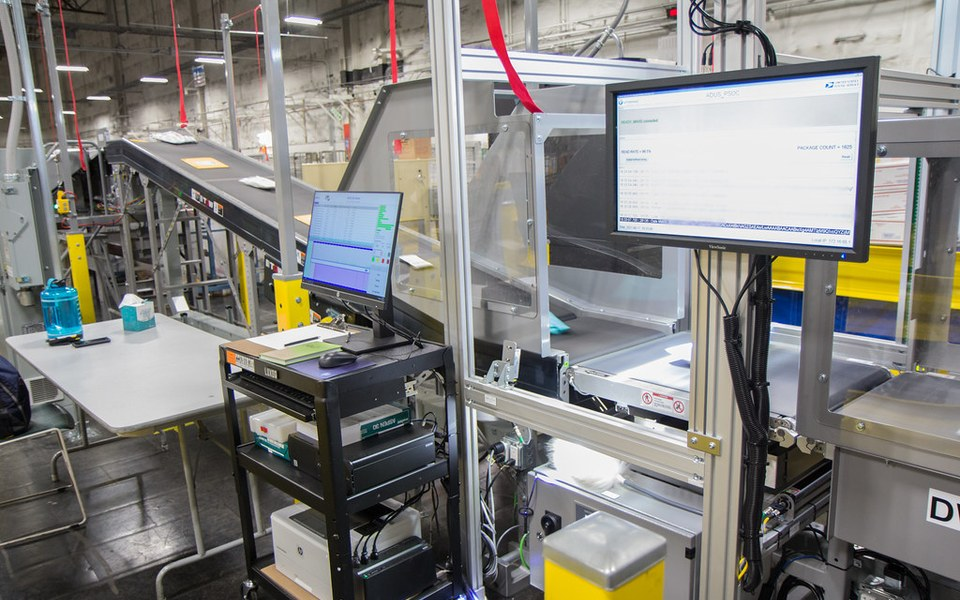

Management Visibility
Management Visibility
One Commercial & Financial View
Unify sales quotes, supplier purchasing, inventory valuation, and SUNAT billing across every branch in real time.
Explore PlatformWe connect commercial management, modern warehouse operations, and enterprise cloud security so industrial companies eliminate spreadsheets, accelerate deliveries, and scale with full financial visibility.
WHO WE ARE
TrazaCore Ingeniería & Sistemas S.A.C. partners with industrial, mining, energy, and B2B distribution leaders across Peru to replace fragmented spreadsheets with one trustworthy operational platform.
From faster purchasing and mandatory quality release controls to automated SUNAT billing and client-owned cloud infrastructure, you keep full ownership of your data with zero vendor lock-in.

TrazaCore engineering directors aligning multi-site inventory workflows and executive dashboards.
VISUAL CAPABILITY OVERVIEW
Management Visibility
Unify sales quotes, supplier purchasing, inventory valuation, and SUNAT billing across every branch in real time.
Explore Platform
Operational SpeedEliminate picking guesswork with smart shelf organization, rugged handheld scanners, and built-in quality holds.
View Services Local Partnership
Local Partnership
Backed by our Surco corporate advisory team, Callao equipment lab, ISO 27001 controls, and 24/7 local SLA support.
About TrazaCoreINTERACTIVE BEFORE VS. AFTER
Slide across the operational spectrum below, then filter the 8-card visual matrix to compare TrazaCore certified controls against legacy high-risk bottlenecks.
TACTICAL ARCHITECTURE MATRIX
Filter cards below to see which controls safeguard margins and audits versus which manual habits stall industrial fulfillment.
Certified Control
Real-time stock visibility across every branch turns confirmed quotes into approval-ready supplier orders.
 Certified Control
Certified Control
Newly received goods stay automatically on hold until quality certificates and safety sheets are uploaded and approved.
Rugged barcode scanners keep working when remote site internet drops, syncing automatically once back online.
Runs inside your company's own cloud account with automatic backups, clear user permissions, and instant SUNAT billing.
Sales quote out-of-stock items while buyers chase approvals through email threads and costly emergency rush orders.
 High Risk Trap
High Risk Trap
Misplaced test certificates or safety sheets delay customer deliveries and trigger costly penalties at client sites.
 High Risk Trap
High Risk Trap
Single office servers, manual backups, and shared logins expose operations to outages and unauthorized stock edits.
 High Risk Trap
High Risk Trap
Grease, moisture, and dust smudge ordinary paper tags within weeks, forcing staff to search warehouse shelves manually.
"Business software fails when it traps your records behind vendor walls. Real modernization connects warehouse floor speed with 100% client-owned data."
EXECUTIVE RISK SHIELD · 3D INTERACTIVE DECK
Switching systems can feel risky for leadership. Flip each card below to see the practical safeguards TrazaCore builds into every project.
Fear of proprietary hosting, surprise exit fees, or losing access to historical records if you ever switch providers.
Everything runs inside your company's own cloud account—never locked on our servers. You keep full ownership of your records, custom tools, and billing control.
Messy legacy spreadsheets and rushed launches often freeze customer invoicing and shipping on Monday morning.
Before launch, we clean your product catalog, verify physical stock counts, run full practice trials, and switch over a planned weekend with a safe fallback plan.
 Concern #03 · Remote Sites
Concern #03 · Remote Sites
Regional branches and distant yards often have unstable Wi-Fi that stops online-only warehouse tools cold.
Our rugged handheld barcode scanners store picking, receiving, and stock-count work safely on the device during outages, then sync automatically once signal returns.
 Concern #04 · Internal Control
Concern #04 · Internal Control
Shared passwords and loose permissions let staff approve their own purchases or hide missing inventory.
Every user has a personal verified login with strict boundaries: staff who create purchases cannot approve them, and floor pickers cannot alter stock values.
Delivering critical industrial parts or chemicals without signed test certs or safety sheets causes client rejections.
Incoming stock remains automatically blocked from picking or invoicing until your quality team uploads and approves the required certificates or safety sheets.
 Concern #06 · Compliance
Concern #06 · Compliance
Re-typing warehouse dispatch notes into separate tax portals delays trucks at the loading dock and causes errors.
Confirming a scanned shipment automatically issues electronic SUNAT invoices and dispatch guides while updating accounting in PEN and USD in real time.
"Technology only delivers return on investment when your warehouse team adopts it effortlessly—from durable shelf labels on the floor to clear dashboards for leadership."
ECOSYSTEM & STANDARDS
READY TO MODERNIZE YOUR OPERATIONS?
Run our interactive ROI & Savings simulator, complete the 5-step Operational Readiness check, or book an executive scoping conversation.